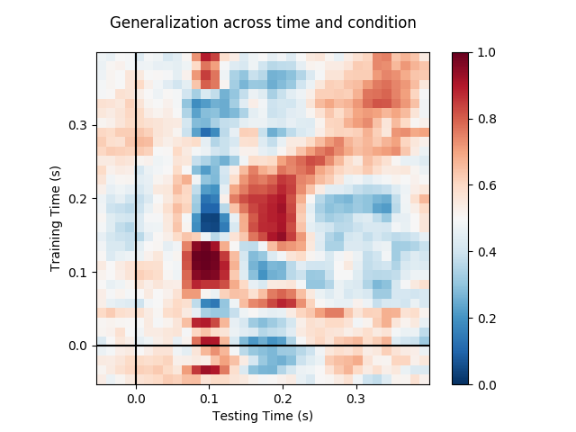

Note
Click here to download the full example code
Decoding sensor space data with generalization across time and conditions¶
This example runs the analysis described in 1. It illustrates how one can fit a linear classifier to identify a discriminatory topography at a given time instant and subsequently assess whether this linear model can accurately predict all of the time samples of a second set of conditions.
# Authors: Jean-Remi King <jeanremi.king@gmail.com>
# Alexandre Gramfort <alexandre.gramfort@inria.fr>
# Denis Engemann <denis.engemann@gmail.com>
#
# License: BSD (3-clause)
import matplotlib.pyplot as plt
from sklearn.pipeline import make_pipeline
from sklearn.preprocessing import StandardScaler
from sklearn.linear_model import LogisticRegression
import mne
from mne.datasets import sample
from mne.decoding import GeneralizingEstimator
print(__doc__)
# Preprocess data
data_path = sample.data_path()
# Load and filter data, set up epochs
raw_fname = data_path + '/MEG/sample/sample_audvis_filt-0-40_raw.fif'
events_fname = data_path + '/MEG/sample/sample_audvis_filt-0-40_raw-eve.fif'
raw = mne.io.read_raw_fif(raw_fname, preload=True)
picks = mne.pick_types(raw.info, meg=True, exclude='bads') # Pick MEG channels
raw.filter(1., 30., fir_design='firwin') # Band pass filtering signals
events = mne.read_events(events_fname)
event_id = {'Auditory/Left': 1, 'Auditory/Right': 2,
'Visual/Left': 3, 'Visual/Right': 4}
tmin = -0.050
tmax = 0.400
# decimate to make the example faster to run, but then use verbose='error' in
# the Epochs constructor to suppress warning about decimation causing aliasing
decim = 2
epochs = mne.Epochs(raw, events, event_id=event_id, tmin=tmin, tmax=tmax,
proj=True, picks=picks, baseline=None, preload=True,
reject=dict(mag=5e-12), decim=decim, verbose='error')
Out:
Opening raw data file /home/circleci/mne_data/MNE-sample-data/MEG/sample/sample_audvis_filt-0-40_raw.fif...
Read a total of 4 projection items:
PCA-v1 (1 x 102) idle
PCA-v2 (1 x 102) idle
PCA-v3 (1 x 102) idle
Average EEG reference (1 x 60) idle
Range : 6450 ... 48149 = 42.956 ... 320.665 secs
Ready.
Reading 0 ... 41699 = 0.000 ... 277.709 secs...
Filtering raw data in 1 contiguous segment
Setting up band-pass filter from 1 - 30 Hz
FIR filter parameters
---------------------
Designing a one-pass, zero-phase, non-causal bandpass filter:
- Windowed time-domain design (firwin) method
- Hamming window with 0.0194 passband ripple and 53 dB stopband attenuation
- Lower passband edge: 1.00
- Lower transition bandwidth: 1.00 Hz (-6 dB cutoff frequency: 0.50 Hz)
- Upper passband edge: 30.00 Hz
- Upper transition bandwidth: 7.50 Hz (-6 dB cutoff frequency: 33.75 Hz)
- Filter length: 497 samples (3.310 sec)
We will train the classifier on all left visual vs auditory trials and test on all right visual vs auditory trials.
clf = make_pipeline(StandardScaler(), LogisticRegression(solver='lbfgs'))
time_gen = GeneralizingEstimator(clf, scoring='roc_auc', n_jobs=1,
verbose=True)
# Fit classifiers on the epochs where the stimulus was presented to the left.
# Note that the experimental condition y indicates auditory or visual
time_gen.fit(X=epochs['Left'].get_data(),
y=epochs['Left'].events[:, 2] > 2)
Out:
0%| | Fitting GeneralizingEstimator : 0/35 [00:00<?, ?it/s]
3%|2 | Fitting GeneralizingEstimator : 1/35 [00:00<00:01, 24.60it/s]
6%|5 | Fitting GeneralizingEstimator : 2/35 [00:00<00:01, 25.02it/s]
9%|8 | Fitting GeneralizingEstimator : 3/35 [00:00<00:01, 26.37it/s]
11%|#1 | Fitting GeneralizingEstimator : 4/35 [00:00<00:01, 18.90it/s]
14%|#4 | Fitting GeneralizingEstimator : 5/35 [00:00<00:01, 15.62it/s]
17%|#7 | Fitting GeneralizingEstimator : 6/35 [00:00<00:01, 17.14it/s]
20%|## | Fitting GeneralizingEstimator : 7/35 [00:00<00:01, 14.47it/s]
23%|##2 | Fitting GeneralizingEstimator : 8/35 [00:00<00:01, 15.36it/s]
26%|##5 | Fitting GeneralizingEstimator : 9/35 [00:00<00:01, 15.35it/s]
31%|###1 | Fitting GeneralizingEstimator : 11/35 [00:00<00:01, 18.34it/s]
34%|###4 | Fitting GeneralizingEstimator : 12/35 [00:00<00:01, 18.23it/s]
37%|###7 | Fitting GeneralizingEstimator : 13/35 [00:00<00:01, 18.94it/s]
40%|#### | Fitting GeneralizingEstimator : 14/35 [00:00<00:01, 19.61it/s]
43%|####2 | Fitting GeneralizingEstimator : 15/35 [00:00<00:01, 18.50it/s]
46%|####5 | Fitting GeneralizingEstimator : 16/35 [00:00<00:00, 19.12it/s]
51%|#####1 | Fitting GeneralizingEstimator : 18/35 [00:00<00:00, 18.87it/s]
54%|#####4 | Fitting GeneralizingEstimator : 19/35 [00:01<00:00, 19.20it/s]
60%|###### | Fitting GeneralizingEstimator : 21/35 [00:01<00:00, 19.26it/s]
66%|######5 | Fitting GeneralizingEstimator : 23/35 [00:01<00:00, 17.92it/s]
69%|######8 | Fitting GeneralizingEstimator : 24/35 [00:01<00:00, 17.12it/s]
71%|#######1 | Fitting GeneralizingEstimator : 25/35 [00:01<00:00, 17.46it/s]
74%|#######4 | Fitting GeneralizingEstimator : 26/35 [00:01<00:00, 17.37it/s]
77%|#######7 | Fitting GeneralizingEstimator : 27/35 [00:01<00:00, 16.77it/s]
83%|########2 | Fitting GeneralizingEstimator : 29/35 [00:01<00:00, 18.06it/s]
86%|########5 | Fitting GeneralizingEstimator : 30/35 [00:01<00:00, 17.30it/s]
89%|########8 | Fitting GeneralizingEstimator : 31/35 [00:01<00:00, 16.63it/s]
91%|#########1| Fitting GeneralizingEstimator : 32/35 [00:01<00:00, 16.66it/s]
94%|#########4| Fitting GeneralizingEstimator : 33/35 [00:01<00:00, 16.08it/s]
100%|##########| Fitting GeneralizingEstimator : 35/35 [00:02<00:00, 17.23it/s]
100%|##########| Fitting GeneralizingEstimator : 35/35 [00:02<00:00, 17.40it/s]
Score on the epochs where the stimulus was presented to the right.
scores = time_gen.score(X=epochs['Right'].get_data(),
y=epochs['Right'].events[:, 2] > 2)
Out:
0%| | Scoring GeneralizingEstimator : 0/1225 [00:00<?, ?it/s]
1%| | Scoring GeneralizingEstimator : 8/1225 [00:00<00:05, 220.26it/s]
2%|1 | Scoring GeneralizingEstimator : 20/1225 [00:00<00:04, 284.82it/s]
2%|1 | Scoring GeneralizingEstimator : 23/1225 [00:00<00:06, 180.90it/s]
3%|2 | Scoring GeneralizingEstimator : 32/1225 [00:00<00:05, 199.76it/s]
3%|2 | Scoring GeneralizingEstimator : 36/1225 [00:00<00:07, 153.57it/s]
4%|3 | Scoring GeneralizingEstimator : 43/1225 [00:00<00:07, 161.06it/s]
4%|4 | Scoring GeneralizingEstimator : 52/1225 [00:00<00:06, 174.93it/s]
4%|4 | Scoring GeneralizingEstimator : 53/1225 [00:00<00:07, 157.07it/s]
5%|5 | Scoring GeneralizingEstimator : 64/1225 [00:00<00:06, 176.08it/s]
6%|5 | Scoring GeneralizingEstimator : 68/1225 [00:00<00:07, 158.27it/s]
6%|6 | Scoring GeneralizingEstimator : 74/1225 [00:00<00:07, 159.94it/s]
7%|6 | Scoring GeneralizingEstimator : 81/1225 [00:00<00:07, 149.56it/s]
7%|7 | Scoring GeneralizingEstimator : 90/1225 [00:00<00:07, 158.71it/s]
8%|7 | Scoring GeneralizingEstimator : 96/1225 [00:00<00:07, 148.55it/s]
9%|8 | Scoring GeneralizingEstimator : 108/1225 [00:00<00:06, 163.02it/s]
9%|9 | Scoring GeneralizingEstimator : 111/1225 [00:00<00:07, 150.61it/s]
10%|9 | Scoring GeneralizingEstimator : 120/1225 [00:00<00:06, 157.99it/s]
10%|# | Scoring GeneralizingEstimator : 128/1225 [00:00<00:07, 154.32it/s]
11%|# | Scoring GeneralizingEstimator : 133/1225 [00:00<00:07, 153.73it/s]
11%|#1 | Scoring GeneralizingEstimator : 140/1225 [00:00<00:07, 146.66it/s]
12%|#2 | Scoring GeneralizingEstimator : 150/1225 [00:00<00:06, 154.70it/s]
13%|#2 | Scoring GeneralizingEstimator : 155/1225 [00:00<00:06, 154.30it/s]
13%|#2 | Scoring GeneralizingEstimator : 156/1225 [00:01<00:07, 147.47it/s]
14%|#3 | Scoring GeneralizingEstimator : 166/1225 [00:01<00:06, 155.34it/s]
14%|#3 | Scoring GeneralizingEstimator : 168/1225 [00:01<00:07, 143.15it/s]
14%|#4 | Scoring GeneralizingEstimator : 176/1225 [00:01<00:07, 147.85it/s]
15%|#4 | Scoring GeneralizingEstimator : 179/1225 [00:01<00:07, 140.06it/s]
15%|#5 | Scoring GeneralizingEstimator : 185/1225 [00:01<00:07, 141.85it/s]
16%|#5 | Scoring GeneralizingEstimator : 195/1225 [00:01<00:07, 141.18it/s]
17%|#6 | Scoring GeneralizingEstimator : 203/1225 [00:01<00:07, 145.60it/s]
17%|#7 | Scoring GeneralizingEstimator : 209/1225 [00:01<00:07, 142.22it/s]
18%|#7 | Scoring GeneralizingEstimator : 218/1225 [00:01<00:06, 147.82it/s]
18%|#8 | Scoring GeneralizingEstimator : 224/1225 [00:01<00:06, 143.09it/s]
19%|#8 | Scoring GeneralizingEstimator : 232/1225 [00:01<00:06, 147.17it/s]
20%|#9 | Scoring GeneralizingEstimator : 240/1225 [00:01<00:06, 145.01it/s]
20%|## | Scoring GeneralizingEstimator : 247/1225 [00:01<00:06, 147.61it/s]
21%|## | Scoring GeneralizingEstimator : 254/1225 [00:01<00:06, 150.18it/s]
21%|##1 | Scoring GeneralizingEstimator : 261/1225 [00:01<00:06, 145.92it/s]
22%|##1 | Scoring GeneralizingEstimator : 267/1225 [00:01<00:06, 147.20it/s]
23%|##2 | Scoring GeneralizingEstimator : 276/1225 [00:01<00:06, 146.08it/s]
23%|##3 | Scoring GeneralizingEstimator : 284/1225 [00:01<00:06, 149.79it/s]
24%|##3 | Scoring GeneralizingEstimator : 291/1225 [00:01<00:06, 145.92it/s]
24%|##4 | Scoring GeneralizingEstimator : 300/1225 [00:02<00:06, 146.51it/s]
25%|##4 | Scoring GeneralizingEstimator : 306/1225 [00:02<00:06, 147.64it/s]
26%|##5 | Scoring GeneralizingEstimator : 315/1225 [00:02<00:06, 145.24it/s]
26%|##6 | Scoring GeneralizingEstimator : 324/1225 [00:02<00:06, 149.84it/s]
27%|##6 | Scoring GeneralizingEstimator : 329/1225 [00:02<00:06, 144.77it/s]
28%|##7 | Scoring GeneralizingEstimator : 338/1225 [00:02<00:05, 148.97it/s]
28%|##8 | Scoring GeneralizingEstimator : 345/1225 [00:02<00:06, 146.18it/s]
29%|##8 | Scoring GeneralizingEstimator : 355/1225 [00:02<00:05, 151.69it/s]
29%|##9 | Scoring GeneralizingEstimator : 360/1225 [00:02<00:05, 146.28it/s]
30%|##9 | Scoring GeneralizingEstimator : 367/1225 [00:02<00:05, 148.47it/s]
30%|### | Scoring GeneralizingEstimator : 371/1225 [00:02<00:05, 143.57it/s]
31%|### | Scoring GeneralizingEstimator : 378/1225 [00:02<00:05, 145.84it/s]
32%|###1 | Scoring GeneralizingEstimator : 386/1225 [00:02<00:05, 143.90it/s]
32%|###2 | Scoring GeneralizingEstimator : 393/1225 [00:02<00:05, 146.14it/s]
32%|###2 | Scoring GeneralizingEstimator : 397/1225 [00:02<00:05, 140.43it/s]
33%|###3 | Scoring GeneralizingEstimator : 406/1225 [00:02<00:05, 144.99it/s]
34%|###3 | Scoring GeneralizingEstimator : 413/1225 [00:02<00:05, 141.64it/s]
35%|###4 | Scoring GeneralizingEstimator : 423/1225 [00:02<00:05, 147.15it/s]
35%|###4 | Scoring GeneralizingEstimator : 428/1225 [00:02<00:05, 142.79it/s]
36%|###5 | Scoring GeneralizingEstimator : 435/1225 [00:02<00:05, 145.03it/s]
36%|###6 | Scoring GeneralizingEstimator : 442/1225 [00:03<00:05, 142.48it/s]
37%|###6 | Scoring GeneralizingEstimator : 449/1225 [00:03<00:05, 144.75it/s]
37%|###7 | Scoring GeneralizingEstimator : 458/1225 [00:03<00:05, 144.20it/s]
38%|###7 | Scoring GeneralizingEstimator : 465/1225 [00:03<00:05, 146.35it/s]
39%|###8 | Scoring GeneralizingEstimator : 474/1225 [00:03<00:05, 145.55it/s]
39%|###9 | Scoring GeneralizingEstimator : 482/1225 [00:03<00:04, 148.75it/s]
40%|###9 | Scoring GeneralizingEstimator : 488/1225 [00:03<00:05, 144.88it/s]
40%|#### | Scoring GeneralizingEstimator : 496/1225 [00:03<00:04, 148.07it/s]
41%|#### | Scoring GeneralizingEstimator : 502/1225 [00:03<00:05, 144.34it/s]
42%|####1 | Scoring GeneralizingEstimator : 511/1225 [00:03<00:04, 148.57it/s]
42%|####2 | Scoring GeneralizingEstimator : 516/1225 [00:03<00:04, 143.52it/s]
42%|####2 | Scoring GeneralizingEstimator : 520/1225 [00:03<00:04, 142.54it/s]
43%|####3 | Scoring GeneralizingEstimator : 528/1225 [00:03<00:04, 140.19it/s]
44%|####3 | Scoring GeneralizingEstimator : 536/1225 [00:03<00:04, 143.46it/s]
44%|####4 | Scoring GeneralizingEstimator : 541/1225 [00:03<00:04, 139.85it/s]
45%|####4 | Scoring GeneralizingEstimator : 549/1225 [00:03<00:04, 143.17it/s]
45%|####5 | Scoring GeneralizingEstimator : 555/1225 [00:03<00:04, 138.85it/s]
46%|####6 | Scoring GeneralizingEstimator : 565/1225 [00:03<00:04, 144.23it/s]
47%|####6 | Scoring GeneralizingEstimator : 574/1225 [00:03<00:04, 144.91it/s]
48%|####7 | Scoring GeneralizingEstimator : 582/1225 [00:03<00:04, 148.00it/s]
48%|####8 | Scoring GeneralizingEstimator : 592/1225 [00:04<00:04, 148.32it/s]
49%|####8 | Scoring GeneralizingEstimator : 599/1225 [00:04<00:04, 150.32it/s]
50%|####9 | Scoring GeneralizingEstimator : 611/1225 [00:04<00:04, 152.43it/s]
51%|##### | Scoring GeneralizingEstimator : 619/1225 [00:04<00:03, 155.22it/s]
51%|#####1 | Scoring GeneralizingEstimator : 628/1225 [00:04<00:03, 159.11it/s]
52%|#####2 | Scoring GeneralizingEstimator : 637/1225 [00:04<00:03, 156.71it/s]
53%|#####2 | Scoring GeneralizingEstimator : 644/1225 [00:04<00:03, 154.26it/s]
53%|#####2 | Scoring GeneralizingEstimator : 649/1225 [00:04<00:03, 153.96it/s]
54%|#####3 | Scoring GeneralizingEstimator : 657/1225 [00:04<00:03, 150.65it/s]
54%|#####4 | Scoring GeneralizingEstimator : 667/1225 [00:04<00:03, 155.57it/s]
55%|#####4 | Scoring GeneralizingEstimator : 671/1225 [00:04<00:03, 150.56it/s]
55%|#####5 | Scoring GeneralizingEstimator : 678/1225 [00:04<00:03, 152.47it/s]
56%|#####5 | Scoring GeneralizingEstimator : 685/1225 [00:04<00:03, 148.79it/s]
57%|#####6 | Scoring GeneralizingEstimator : 694/1225 [00:04<00:03, 152.75it/s]
57%|#####7 | Scoring GeneralizingEstimator : 702/1225 [00:04<00:03, 155.66it/s]
57%|#####7 | Scoring GeneralizingEstimator : 703/1225 [00:04<00:03, 151.16it/s]
58%|#####8 | Scoring GeneralizingEstimator : 712/1225 [00:04<00:03, 155.25it/s]
58%|#####8 | Scoring GeneralizingEstimator : 716/1225 [00:04<00:03, 148.04it/s]
59%|#####9 | Scoring GeneralizingEstimator : 726/1225 [00:04<00:03, 153.12it/s]
60%|#####9 | Scoring GeneralizingEstimator : 732/1225 [00:04<00:03, 150.71it/s]
60%|###### | Scoring GeneralizingEstimator : 740/1225 [00:04<00:03, 153.66it/s]
61%|###### | Scoring GeneralizingEstimator : 746/1225 [00:05<00:03, 149.48it/s]
61%|######1 | Scoring GeneralizingEstimator : 752/1225 [00:05<00:03, 150.41it/s]
62%|######1 | Scoring GeneralizingEstimator : 757/1225 [00:05<00:03, 145.36it/s]
62%|######2 | Scoring GeneralizingEstimator : 765/1225 [00:05<00:03, 148.50it/s]
63%|######2 | Scoring GeneralizingEstimator : 771/1225 [00:05<00:03, 144.66it/s]
64%|######3 | Scoring GeneralizingEstimator : 780/1225 [00:05<00:02, 148.90it/s]
64%|######4 | Scoring GeneralizingEstimator : 787/1225 [00:05<00:03, 145.42it/s]
65%|######4 | Scoring GeneralizingEstimator : 795/1225 [00:05<00:02, 148.55it/s]
65%|######5 | Scoring GeneralizingEstimator : 802/1225 [00:05<00:02, 145.14it/s]
66%|######6 | Scoring GeneralizingEstimator : 810/1225 [00:05<00:02, 148.28it/s]
67%|######6 | Scoring GeneralizingEstimator : 816/1225 [00:05<00:02, 144.48it/s]
67%|######7 | Scoring GeneralizingEstimator : 822/1225 [00:05<00:02, 145.57it/s]
68%|######7 | Scoring GeneralizingEstimator : 827/1225 [00:05<00:02, 142.09it/s]
68%|######7 | Scoring GeneralizingEstimator : 832/1225 [00:05<00:02, 142.25it/s]
69%|######8 | Scoring GeneralizingEstimator : 840/1225 [00:05<00:02, 140.87it/s]
69%|######9 | Scoring GeneralizingEstimator : 846/1225 [00:05<00:02, 142.07it/s]
70%|######9 | Scoring GeneralizingEstimator : 853/1225 [00:05<00:02, 139.70it/s]
70%|####### | Scoring GeneralizingEstimator : 862/1225 [00:05<00:02, 144.01it/s]
71%|####### | Scoring GeneralizingEstimator : 869/1225 [00:05<00:02, 141.33it/s]
72%|#######1 | Scoring GeneralizingEstimator : 876/1225 [00:05<00:02, 143.56it/s]
72%|#######2 | Scoring GeneralizingEstimator : 883/1225 [00:05<00:02, 145.76it/s]
73%|#######2 | Scoring GeneralizingEstimator : 891/1225 [00:06<00:02, 143.86it/s]
73%|#######3 | Scoring GeneralizingEstimator : 897/1225 [00:06<00:02, 140.82it/s]
74%|#######3 | Scoring GeneralizingEstimator : 905/1225 [00:06<00:02, 144.08it/s]
74%|#######4 | Scoring GeneralizingEstimator : 910/1225 [00:06<00:02, 144.21it/s]
74%|#######4 | Scoring GeneralizingEstimator : 911/1225 [00:06<00:02, 139.82it/s]
75%|#######5 | Scoring GeneralizingEstimator : 920/1225 [00:06<00:02, 144.31it/s]
76%|#######5 | Scoring GeneralizingEstimator : 925/1225 [00:06<00:02, 140.14it/s]
76%|#######5 | Scoring GeneralizingEstimator : 930/1225 [00:06<00:02, 140.35it/s]
77%|#######6 | Scoring GeneralizingEstimator : 938/1225 [00:06<00:02, 137.94it/s]
77%|#######7 | Scoring GeneralizingEstimator : 945/1225 [00:06<00:01, 140.34it/s]
78%|#######7 | Scoring GeneralizingEstimator : 951/1225 [00:06<00:01, 137.04it/s]
78%|#######8 | Scoring GeneralizingEstimator : 960/1225 [00:06<00:01, 141.57it/s]
79%|#######8 | Scoring GeneralizingEstimator : 967/1225 [00:06<00:01, 139.17it/s]
80%|#######9 | Scoring GeneralizingEstimator : 978/1225 [00:06<00:01, 145.48it/s]
80%|######## | Scoring GeneralizingEstimator : 981/1225 [00:06<00:01, 140.10it/s]
81%|######## | Scoring GeneralizingEstimator : 987/1225 [00:06<00:01, 141.39it/s]
81%|########1 | Scoring GeneralizingEstimator : 997/1225 [00:06<00:01, 140.93it/s]
82%|########1 | Scoring GeneralizingEstimator : 1004/1225 [00:06<00:01, 143.19it/s]
82%|########2 | Scoring GeneralizingEstimator : 1010/1225 [00:06<00:01, 140.12it/s]
83%|########3 | Scoring GeneralizingEstimator : 1017/1225 [00:06<00:01, 142.37it/s]
84%|########3 | Scoring GeneralizingEstimator : 1028/1225 [00:07<00:01, 144.81it/s]
85%|########4 | Scoring GeneralizingEstimator : 1036/1225 [00:07<00:01, 147.97it/s]
85%|########5 | Scoring GeneralizingEstimator : 1044/1225 [00:07<00:01, 146.20it/s]
86%|########5 | Scoring GeneralizingEstimator : 1049/1225 [00:07<00:01, 146.18it/s]
86%|########6 | Scoring GeneralizingEstimator : 1059/1225 [00:07<00:01, 146.01it/s]
87%|########6 | Scoring GeneralizingEstimator : 1063/1225 [00:07<00:01, 144.98it/s]
88%|########7 | Scoring GeneralizingEstimator : 1075/1225 [00:07<00:01, 148.07it/s]
88%|########8 | Scoring GeneralizingEstimator : 1082/1225 [00:07<00:00, 150.01it/s]
89%|########9 | Scoring GeneralizingEstimator : 1092/1225 [00:07<00:00, 148.97it/s]
90%|########9 | Scoring GeneralizingEstimator : 1099/1225 [00:07<00:00, 150.89it/s]
90%|######### | Scoring GeneralizingEstimator : 1106/1225 [00:07<00:00, 148.59it/s]
91%|######### | Scoring GeneralizingEstimator : 1110/1225 [00:07<00:00, 147.49it/s]
91%|#########1| Scoring GeneralizingEstimator : 1119/1225 [00:07<00:00, 146.75it/s]
92%|#########2| Scoring GeneralizingEstimator : 1129/1225 [00:07<00:00, 151.81it/s]
93%|#########2| Scoring GeneralizingEstimator : 1137/1225 [00:07<00:00, 150.47it/s]
93%|#########3| Scoring GeneralizingEstimator : 1143/1225 [00:07<00:00, 151.32it/s]
94%|#########3| Scoring GeneralizingEstimator : 1151/1225 [00:07<00:00, 148.68it/s]
95%|#########4| Scoring GeneralizingEstimator : 1158/1225 [00:07<00:00, 150.62it/s]
95%|#########5| Scoring GeneralizingEstimator : 1164/1225 [00:07<00:00, 147.41it/s]
95%|#########5| Scoring GeneralizingEstimator : 1169/1225 [00:07<00:00, 147.35it/s]
96%|#########6| Scoring GeneralizingEstimator : 1180/1225 [00:08<00:00, 148.68it/s]
97%|#########6| Scoring GeneralizingEstimator : 1185/1225 [00:08<00:00, 148.59it/s]
98%|#########7| Scoring GeneralizingEstimator : 1196/1225 [00:08<00:00, 149.83it/s]
98%|#########7| Scoring GeneralizingEstimator : 1200/1225 [00:08<00:00, 148.13it/s]
99%|#########8| Scoring GeneralizingEstimator : 1209/1225 [00:08<00:00, 147.94it/s]
99%|#########9| Scoring GeneralizingEstimator : 1215/1225 [00:08<00:00, 148.90it/s]
100%|#########9| Scoring GeneralizingEstimator : 1224/1225 [00:08<00:00, 147.98it/s]
100%|##########| Scoring GeneralizingEstimator : 1225/1225 [00:08<00:00, 147.15it/s]
Plot
fig, ax = plt.subplots(1)
im = ax.matshow(scores, vmin=0, vmax=1., cmap='RdBu_r', origin='lower',
extent=epochs.times[[0, -1, 0, -1]])
ax.axhline(0., color='k')
ax.axvline(0., color='k')
ax.xaxis.set_ticks_position('bottom')
ax.set_xlabel('Testing Time (s)')
ax.set_ylabel('Training Time (s)')
ax.set_title('Generalization across time and condition')
plt.colorbar(im, ax=ax)
plt.show()

References¶
- 1
Jean-Rémi King and Stanislas Dehaene. Characterizing the dynamics of mental representations: the temporal generalization method. Trends in Cognitive Sciences, 18(4):203–210, 2014. doi:10.1016/j.tics.2014.01.002.
Total running time of the script: ( 0 minutes 16.124 seconds)
Estimated memory usage: 129 MB